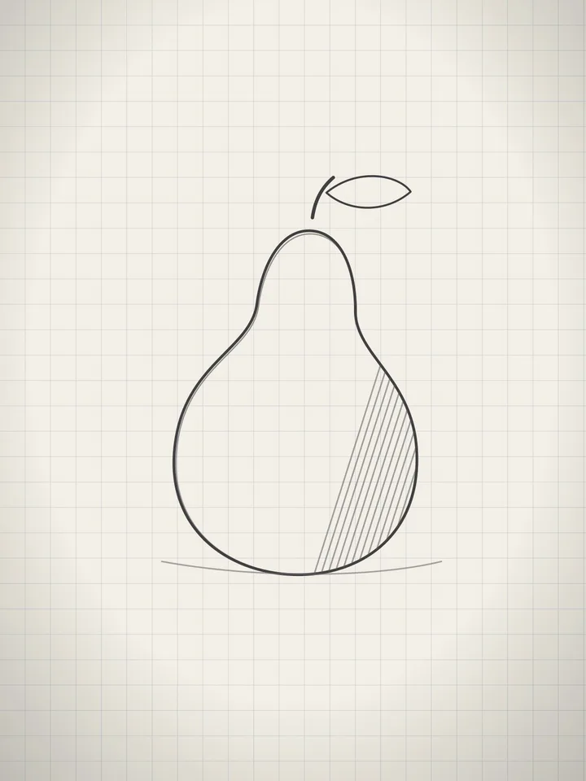
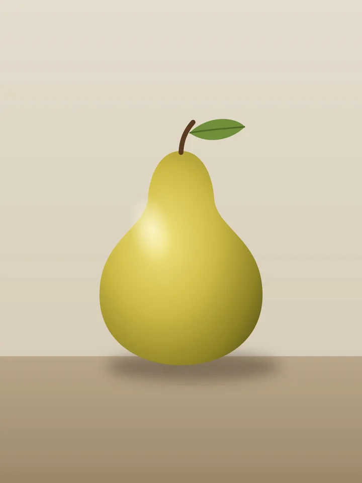
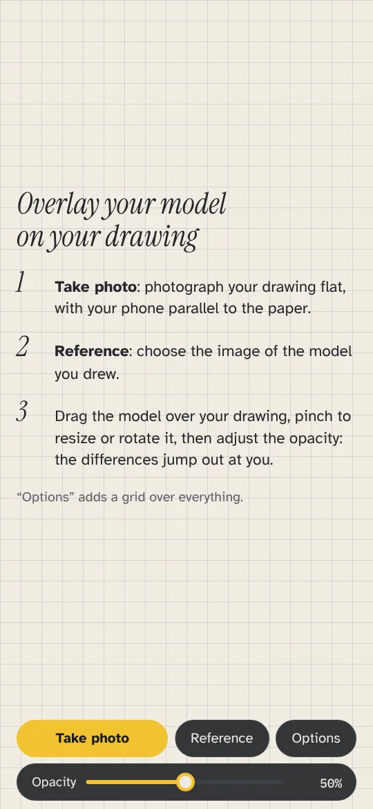
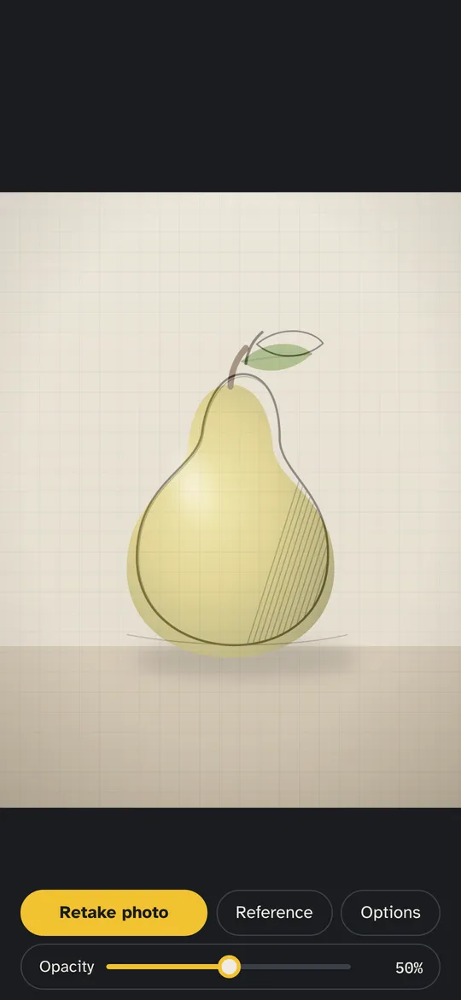
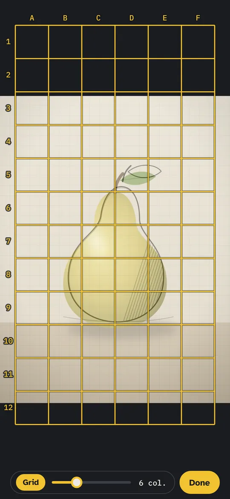

See exactly where your drawing drifts from the model
Draw freehand as usual. Then photograph your drawing, lay the photo of your model over it and adjust the opacity: proportions, angles and spacing that are off jump out at once.


Move the slider: the yellow pear is the model, the pencil lines are the drawing.
Three steps, no tracing
-

Photograph your drawing
Take a photo of your finished drawing with the app.
-

Choose your model
Pick the photo you drew from in your gallery.
-

Overlay and compare
Drag the model onto your drawing, pinch to resize or rotate it, then play with the opacity. Add a grid to locate each gap.
Why it helps you improve
You draw for real
Lucida Drawing doesn't project anything while you draw. You work freehand, then check: that's how your eye learns.
Errors become visible
A head too narrow, an eye too high, a tilted axis: once overlaid, the gap is obvious and measurable.
A grid to locate them
Lettered columns and numbered rows: “the jaw is off in D7” is easier to fix than “something is wrong”.
Your photos stay on your phone
No account, no ads, no tracking. Nothing is sent anywhere.
Where the name comes from
In 1806, William Hyde Wollaston patented the camera lucida: a small prism on a stand that lets an artist see the subject and the paper at the same time. Lucida Drawing applies the same idea once the drawing is done: model and drawing in a single view.
Simple pricing
Free
3 comparisons per day, every feature included.
Unlimited
As many comparisons as you want. No commitment: cancel anytime in Google Play.
Prices in euros; Google Play shows the equivalent in your currency.
Questions
Is it a tracing app?
No. Tracing apps project an image so you can copy it line by line. Lucida Drawing is used after you've drawn, to compare your work with the model and see what to correct.
Do my photos leave my phone?
No. Your photos are only displayed on your phone. The app has no account and sends nothing to any server.
Which phones does it work on?
Android phones running Android 7 or later. There is no iPhone version.
How do I cancel the subscription?
In the Google Play app: profile icon, Payments and subscriptions, Subscriptions, Lucida Drawing. Unlimited stays active until the end of the month already paid.
Which languages?
English, French, Spanish and German. The app follows your phone's language.